Preliminary analysis of flash and mash result (factor 2)
18 June, 2018
1 Set up
library(ggplot2)
library(mashr)
library(biomaRt)
library(dplyr)
library(topGO)
library(pander)
library(rmeta)
library(reshape2)
panderOptions('knitr.auto.asis', FALSE)
panderOptions('table.split.table', Inf)2 Read data
flash <- readRDS('../output/gtex_flash.rds')
mash <- readRDS('../output/gtex_mash.rds')
eqtl <- read.table('../output/strong_eqtl_names.txt')$V1
## get gtex color
gtex.color <- read.table(url('https://github.com/stephenslab/gtexresults/raw/master/data/GTExColors.txt'), sep = '\t', comment.char = '')
gtex.color <- gtex.color[c(1:6,9:18,21:23,26:30,32,33,35,36,38:53), 1:2]
tissue.color <- as.character(gtex.color[,2])
ntissue <- nrow(gtex.color)3 Factor 9
See details of factor 9 at here
l <- flash$EL
dim(l)## [1] 16069 23l.two <- l[, 2]
top.tissue.idx <- order(abs(flash$EF[, 2]), decreasing = T)[1 : 3]
hist(l.two)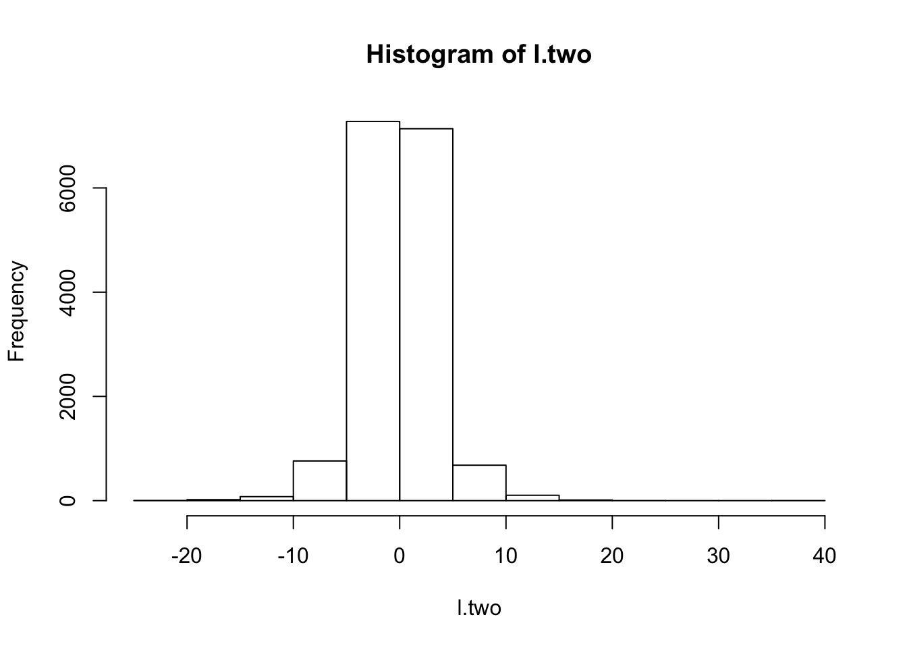
top.ten.idx <- order(l.two, decreasing = T)[1:10]
bottom.ten.idx <- order(l.two, decreasing = F)[1:10]3.1 Ten eQTL with highest loading
par(mfrow = c(5, 2))
for(i in 1 : 10) {
mash_plot_meta(mash$posterior, top.ten.idx[i], color = meta.colors(lines = tissue.color), main = paste0(i, ': ', eqtl[i]))
}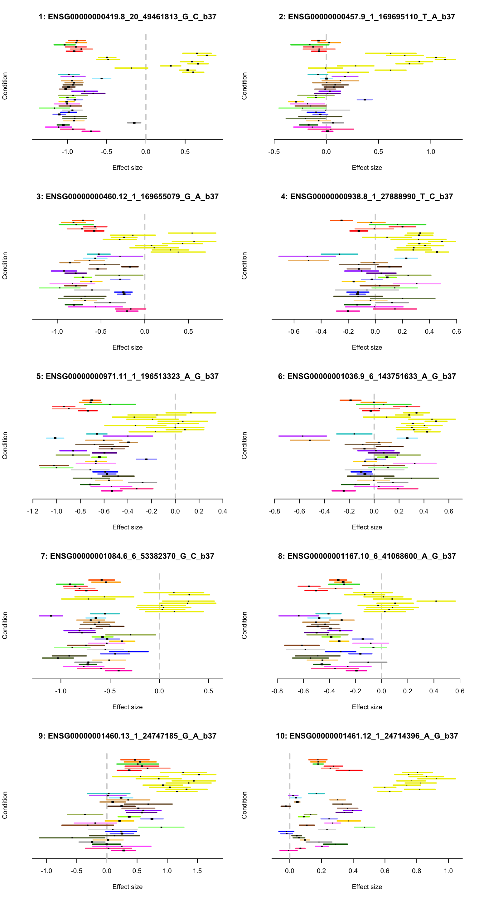
3.2 Ten eQTL with lowest loading
par(mfrow = c(5, 2))
for(i in 1 : 10) {
mash_plot_meta(mash$posterior, bottom.ten.idx[i], color = meta.colors(lines = tissue.color), main = paste0(i, ': ', eqtl[i]))
}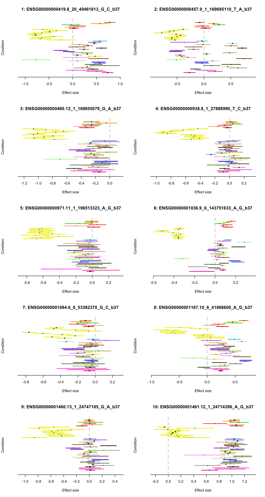
4 Gene ontology enrichment analysis
EQTLs with top and bottom loadings (50 respectively) are used as positive set and 500 eQTLs with most modest loading as background set.
annotateEQTL <- function(eqtl, idx, ensembl) {
ensg <- data.frame(t(sapply(eqtl[idx], function(str) {
temp <- strsplit(as.character(str), '_')[[1]]
x <- temp[1]
chr <- temp[2]
s <- temp[3]
return(c(strsplit(x, '.', fixed = T)[[1]][1], chr, s))
})))
colnames(ensg) <- c('ensembl_gene_id', 'eqtl_chr', 'eqtl_start')
ensg$idx <- idx
ensg$ensembl_gene_id <- as.character(ensg$ensembl_gene_id)
re <- getBM(
attributes = c('ensembl_gene_id', 'hgnc_symbol', 'chromosome_name', 'start_position', 'end_position', 'strand', 'go_id', 'name_1006', 'uniprot_genename', 'uniprot_swissprot_accession', 'transcript_start', 'transcript_end'),
filters = 'ensembl_gene_id',
values = ensg[, 1],
mart = ensembl)
re <- inner_join(re, ensg, by = 'ensembl_gene_id')
return(re)
}
genGene2GO <- function(g2g, re) {
gene <- unique(re$ensembl_gene_id)
for(x in gene) {
g2g[[x]] <- re[re$ensembl_gene_id == x, 'go_id']
}
return(g2g)
}
ensembl <- useMart(biomart="ENSEMBL_MART_ENSEMBL", host="feb2014.archive.ensembl.org", path="/biomart/martservice", dataset="hsapiens_gene_ensembl")
positive.idx <- c(order(l.two, decreasing = T)[1:50], order(l.two, decreasing = F)[1:50])
control.idx <- order(abs(l.two), decreasing = F)[1:500]
positive.re <- annotateEQTL(eqtl, positive.idx, ensembl)
control.re <- annotateEQTL(eqtl, control.idx, ensembl)
gene2go <- list()
gene2go <- genGene2GO(gene2go, positive.re)
gene2go <- genGene2GO(gene2go, control.re)
all.gene <- union(unique(positive.re$ensembl_gene_id), unique(control.re$ensembl_gene_id))
gene.list <- factor(as.integer(all.gene %in% unique(positive.re$ensembl_gene_id)))
names(gene.list) <- all.gene
map <- list(BP = 'Biological process', MF = 'Molecular function', CC = 'Cellular component')
for(i in c('BP', 'MF', 'CC')) {
cat('##', map[[i]])
cat('\n')
GOdata <- new("topGOdata", ontology = i, allGenes = gene.list, annot = annFUN.gene2GO, gene2GO = gene2go)
resultFisher <- runTest(GOdata, algorithm = "classic", statistic = "fisher")
allRes <- GenTable(GOdata, classicFisher = resultFisher)
pander(allRes, caption = i)
cat('\n')
cat('\n')
}4.1 Biological process
##
## Building most specific GOs .....## ( 1602 GO terms found. )##
## Build GO DAG topology ..........## ( 4242 GO terms and 9650 relations. )##
## Annotating nodes ...............## ( 361 genes annotated to the GO terms. )##
## -- Classic Algorithm --
##
## the algorithm is scoring 1777 nontrivial nodes
## parameters:
## test statistic: fisher| GO.ID | Term | Annotated | Significant | Expected | classicFisher |
|---|---|---|---|---|---|
| GO:0007200 | phospholipase C-activating G-protein cou… | 3 | 3 | 0.52 | 0.0051 |
| GO:0030261 | chromosome condensation | 3 | 3 | 0.52 | 0.0051 |
| GO:0000226 | microtubule cytoskeleton organization | 10 | 5 | 1.75 | 0.0172 |
| GO:0000819 | sister chromatid segregation | 4 | 3 | 0.7 | 0.0179 |
| GO:0007126 | meiotic nuclear division | 4 | 3 | 0.7 | 0.0179 |
| GO:0007187 | G-protein coupled receptor signaling pat… | 4 | 3 | 0.7 | 0.0179 |
| GO:0051321 | meiotic cell cycle | 4 | 3 | 0.7 | 0.0179 |
| GO:0098813 | nuclear chromosome segregation | 4 | 3 | 0.7 | 0.0179 |
| GO:1903046 | meiotic cell cycle process | 4 | 3 | 0.7 | 0.0179 |
| GO:0051640 | organelle localization | 7 | 4 | 1.22 | 0.0196 |
4.2 Molecular function
##
## Building most specific GOs .....## ( 468 GO terms found. )##
## Build GO DAG topology ..........## ( 758 GO terms and 952 relations. )##
## Annotating nodes ...............## ( 367 genes annotated to the GO terms. )##
## -- Classic Algorithm --
##
## the algorithm is scoring 238 nontrivial nodes
## parameters:
## test statistic: fisher| GO.ID | Term | Annotated | Significant | Expected | classicFisher |
|---|---|---|---|---|---|
| GO:0001664 | G-protein coupled receptor binding | 3 | 3 | 0.5 | 0.0044 |
| GO:0008083 | growth factor activity | 2 | 2 | 0.33 | 0.0272 |
| GO:0016209 | antioxidant activity | 2 | 2 | 0.33 | 0.0272 |
| GO:0016836 | hydro-lyase activity | 2 | 2 | 0.33 | 0.0272 |
| GO:0004896 | cytokine receptor activity | 3 | 2 | 0.5 | 0.0729 |
| GO:0005200 | structural constituent of cytoskeleton | 3 | 2 | 0.5 | 0.0729 |
| GO:0008375 | acetylglucosaminyltransferase activity | 3 | 2 | 0.5 | 0.0729 |
| GO:0016829 | lyase activity | 3 | 2 | 0.5 | 0.0729 |
| GO:0016835 | carbon-oxygen lyase activity | 3 | 2 | 0.5 | 0.0729 |
| GO:0008234 | cysteine-type peptidase activity | 4 | 2 | 0.66 | 0.1304 |
4.3 Cellular component
##
## Building most specific GOs .....## ( 312 GO terms found. )##
## Build GO DAG topology ..........## ( 544 GO terms and 1091 relations. )##
## Annotating nodes ...............## ( 381 genes annotated to the GO terms. )##
## -- Classic Algorithm --
##
## the algorithm is scoring 216 nontrivial nodes
## parameters:
## test statistic: fisher| GO.ID | Term | Annotated | Significant | Expected | classicFisher |
|---|---|---|---|---|---|
| GO:0005740 | mitochondrial envelope | 15 | 6 | 2.6 | 0.030 |
| GO:0031966 | mitochondrial membrane | 15 | 6 | 2.6 | 0.030 |
| GO:0005576 | extracellular region | 38 | 11 | 6.58 | 0.044 |
| GO:0044429 | mitochondrial part | 22 | 7 | 3.81 | 0.066 |
| GO:0015030 | Cajal body | 3 | 2 | 0.52 | 0.079 |
| GO:0031967 | organelle envelope | 23 | 7 | 3.98 | 0.082 |
| GO:0031975 | envelope | 23 | 7 | 3.98 | 0.082 |
| GO:0005741 | mitochondrial outer membrane | 7 | 3 | 1.21 | 0.103 |
| GO:0015630 | microtubule cytoskeleton | 25 | 7 | 4.33 | 0.120 |
| GO:0005856 | cytoskeleton | 45 | 11 | 7.8 | 0.130 |
It turns out that these top genes are enriched in cation/ion transcportation process.
5 Overview of selected gene sets
df <- data.frame(loading = l.two[c(positive.idx, control.idx)], label = c(rep('positive', length(positive.idx)), rep('control', length(control.idx))))
ggplot(df) + geom_histogram(aes(x = loading, group = label, fill = label), binwidth = 1) + ggtitle('Histogram of loading')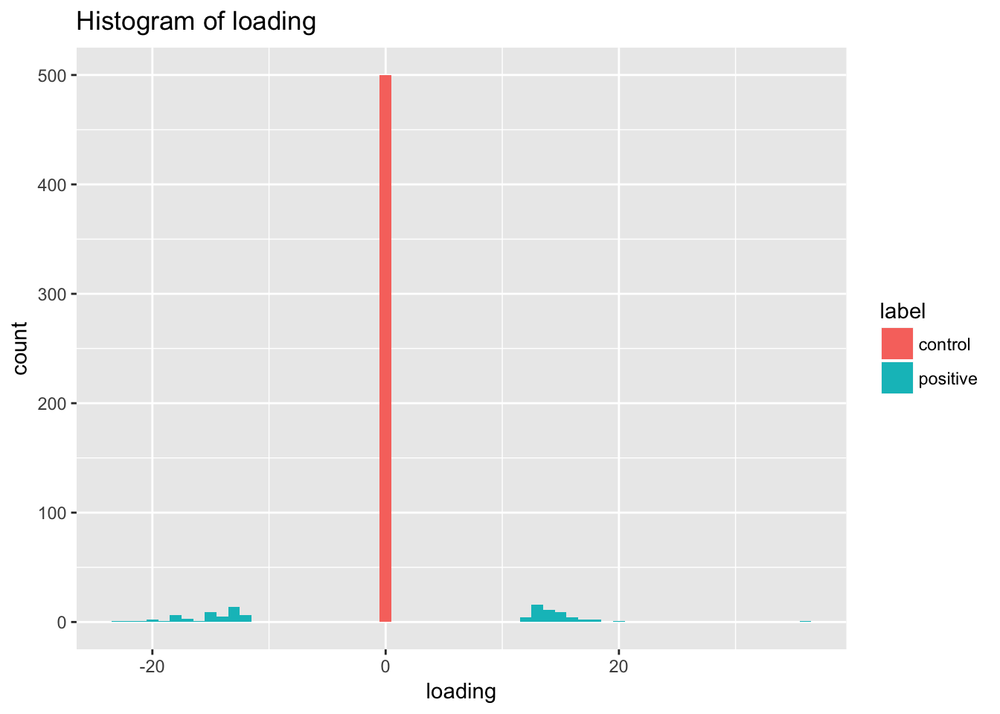
5.1 Posterior mean comparison across top three tissues
df.load <- mash$posterior$result$PosteriorMean[positive.idx, top.tissue.idx]
pairs(df.load, main = 'Pairwise comparison of top three tissues in positive set')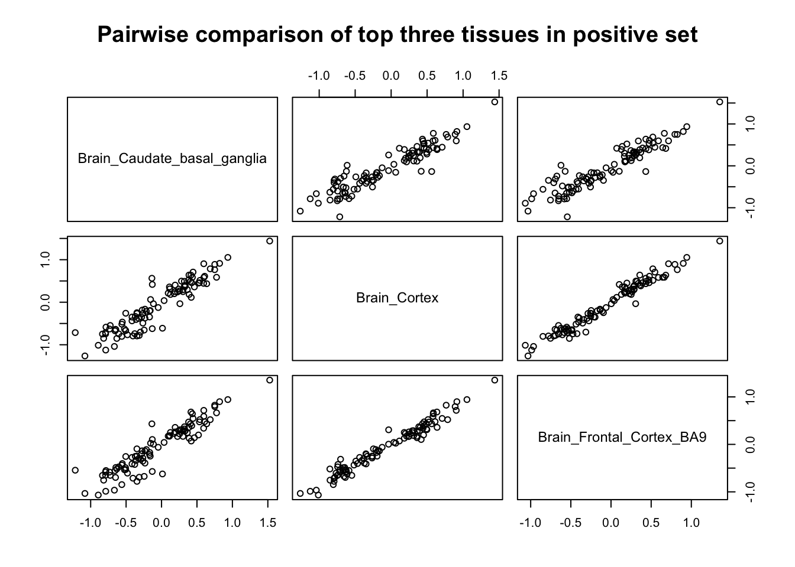
df.load <- mash$posterior$result$PosteriorMean[control.idx, top.tissue.idx]
pairs(df.load, main = 'Pairwise comparison of top three tissues in control set')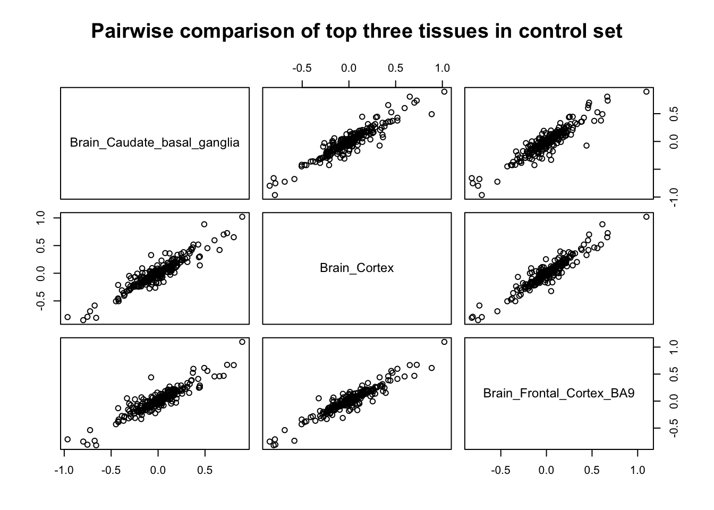
So, it seems that the ones with strong loading on factor 9 are driven by tissue specificity but not strong correlation between these top tissues, which is the same as factor 5.
5.2 Posterior effect size of control eQTLs
random.idx <- sample(control.idx, 10, replace = F)
par(mfrow = c(5, 2))
for(i in 1 : 10) {
mash_plot_meta(mash$posterior, random.idx[i], color = meta.colors(lines = tissue.color), main = paste0(i, ': ', eqtl[i]))
}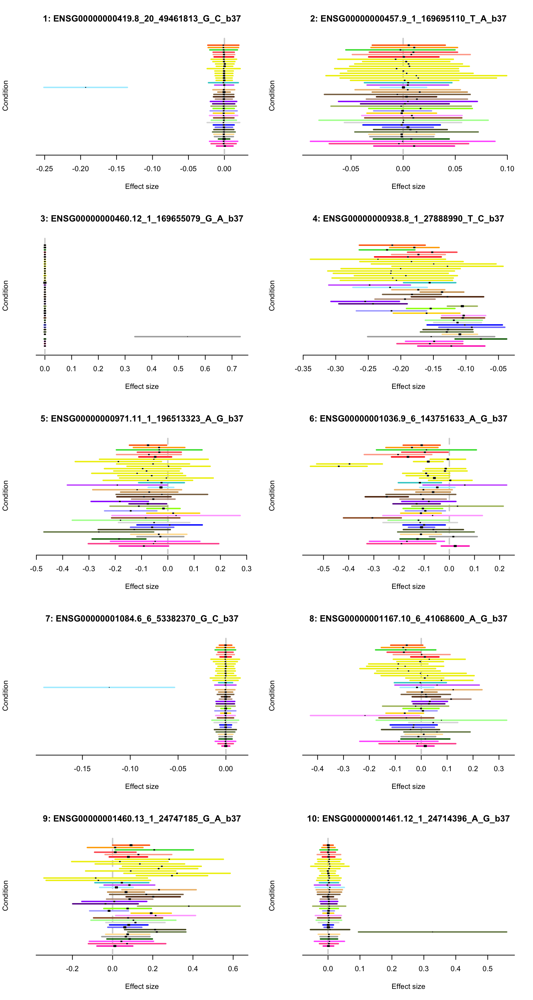
6 G-protein coupled receptor
GO term ‘GO:0007200’ is used (represent phospholipase C-activating G-protein coupled receptor signaling pathway )
6.1 Loading
Contrast eQTL in cation/ion transport with the ones unrelated to cation/ion transport on the loading of factor 9.
re.go <- read.table('../output/strong_eqtl_annotated.txt.gz', header = T)
re.go.dup <- duplicated(re.go[, c('ensembl_gene_id', 'go_id')])
re.go <- re.go[!re.go.dup, ]
cr.gene <- re.go[re.go$go_id == 'GO:0007200', 'idx']
tspt <- rep('Not GP', length(l.two))
tspt[unique(cr.gene)] <- 'GP'
df <- data.frame(loading = l.two, label = tspt)
ggplot(df, aes(x = abs(loading), color = label)) + stat_ecdf()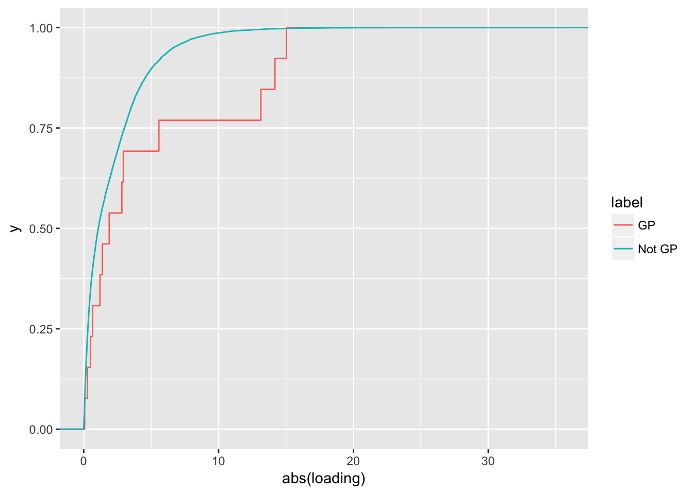
ks.test(abs(df$loading[df$label == 'Not GP']), abs(df$loading[df$label == 'GP']), alternative = 'g')##
## Two-sample Kolmogorov-Smirnov test
##
## data: abs(df$loading[df$label == "Not GP"]) and abs(df$loading[df$label == "GP"])
## D^+ = 0.22635, p-value = 0.2642
## alternative hypothesis: the CDF of x lies above that of ywilcox.test(abs(df$loading[df$label == 'Not GP']), abs(df$loading[df$label == 'GP']), alternative = 'l')##
## Wilcoxon rank sum test with continuity correction
##
## data: abs(df$loading[df$label == "Not GP"]) and abs(df$loading[df$label == "GP"])
## W = 78406, p-value = 0.06026
## alternative hypothesis: true location shift is less than 0The result supports the hypothesis that the eQTLs with strong loading on factor 2 are enriched in the phospholipase C-activating G-protein coupled receptor signaling pathway.
6.2 Effect size
Contrast effect size
df <- data.frame(mash$posterior$result$PosteriorMean[, ])
df.se <- data.frame(mash$posterior$result$PosteriorSD[, ])
col <- colnames(df)
df.sig <- data.frame(abs(df) > df.se * 1.96)
df.sig$label <- tspt
df.sig <- melt(df.sig, id.vars = 'label')
ggplot(df.sig) +
geom_bar(aes(x = variable, group = value, color = value), position = "fill") +
facet_grid(label~.) +
scale_fill_manual(values = tissue.color, guide = FALSE) +
theme(axis.text.x = element_text(angle = 90, hjust = 1, vjust = 0.5, color = tissue.color)) +
ggtitle('Proportion of non-zero effect gene')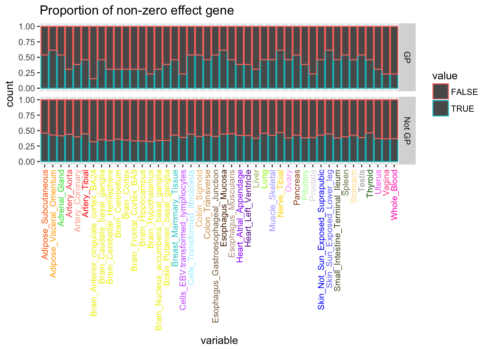
df.prop <- df.sig %>% group_by(variable, label) %>%
summarise(prop = sum(value) / length(value))
df <- data.frame(GP = df.prop$prop[df.prop$label == 'GP'], NGP = df.prop$prop[df.prop$label == 'Not GP'], tissue = df.prop$variable[df.prop$label == 'GP'])
ggplot(df) + geom_point(aes(x = NGP, y = GP, color = tissue)) +
scale_color_manual(values = tissue.color, guide = FALSE) + geom_abline(slope = 1, intercept = 0) +
ggtitle('Proportion of non-zero effect gene (GP vs not GP)')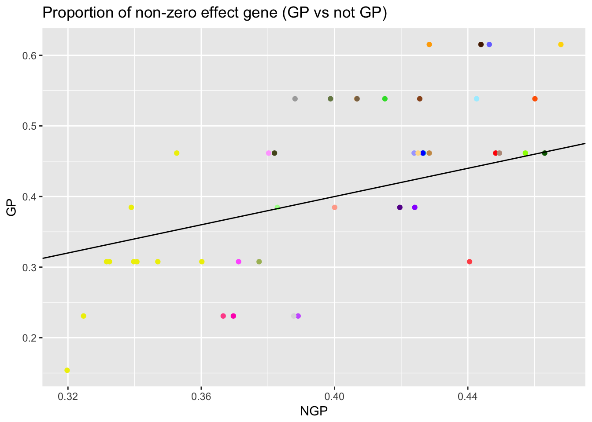
Overall, genes involved in the phospholipase C-activating G-protein coupled receptor signaling pathway does NOT tend to have non-zero posterior effect (95% credible interval).
7 Cellular respiration (CR)
GO term ‘GO:0055114’ is used (represent oxidation-reduction process)
7.1 Loading
Contrast eQTL in cellular respiration with the ones unrelated to cellular respiration on the loading of factor 2.
cr.gene <- re.go[re.go$go_id == 'GO:0055114', 'idx']
cr <- rep('Not CR', length(l.two))
cr[unique(cr.gene)] <- 'CR'
df <- data.frame(loading = l.two, label = cr)
ggplot(df, aes(x = abs(loading), color = label)) + stat_ecdf()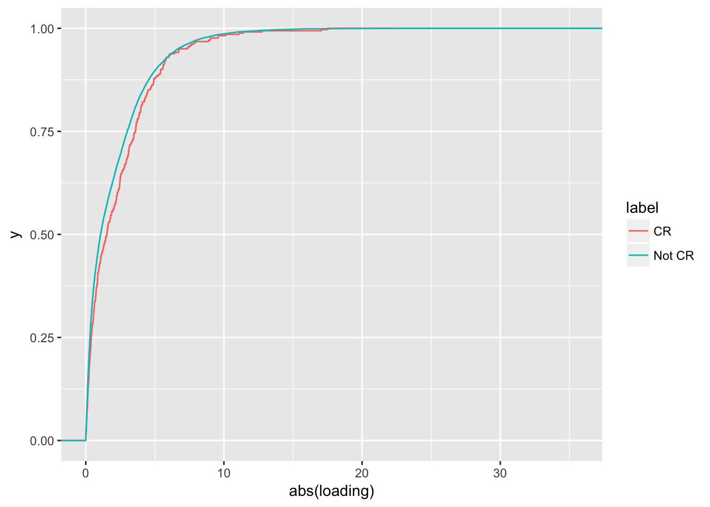
ks.test(abs(df$loading[df$label == 'Not CR']), abs(df$loading[df$label == 'CR']), alternative = 'g')##
## Two-sample Kolmogorov-Smirnov test
##
## data: abs(df$loading[df$label == "Not CR"]) and abs(df$loading[df$label == "CR"])
## D^+ = 0.079094, p-value = 0.01518
## alternative hypothesis: the CDF of x lies above that of ywilcox.test(abs(df$loading[df$label == 'Not CR']), abs(df$loading[df$label == 'CR']), alternative = 'l')##
## Wilcoxon rank sum test with continuity correction
##
## data: abs(df$loading[df$label == "Not CR"]) and abs(df$loading[df$label == "CR"])
## W = 2446200, p-value = 0.002092
## alternative hypothesis: true location shift is less than 0It seems that factor 2 is also associated with cellular repiration. But the enrichment happens in relativelt moderate loading on factor 2.
7.2 Factor 2 vs. factor 5
df.sum <- data.frame(l5 = l.five, l2 = l.two, cr = cr, tspt = tspt)
ggplot(df.sum) + stat_ecdf(aes(x = abs(l5), color = cr))
ggplot(df.sum) + stat_ecdf(aes(x = abs(l5), color = tspt))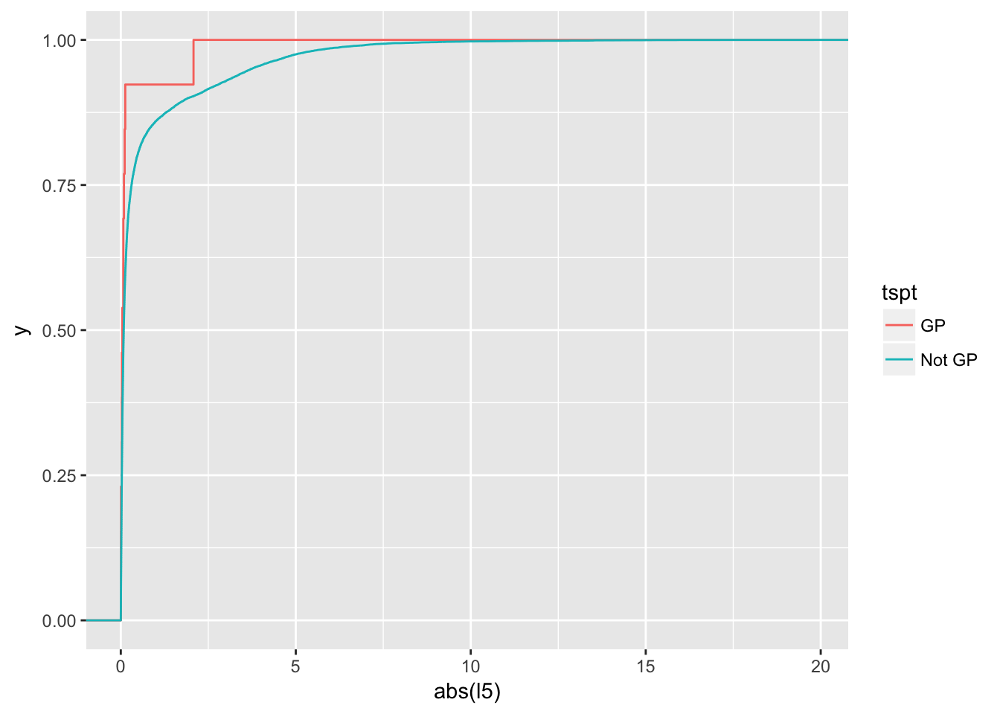
ggplot(df.sum) + stat_ecdf(aes(x = abs(l2), color = cr))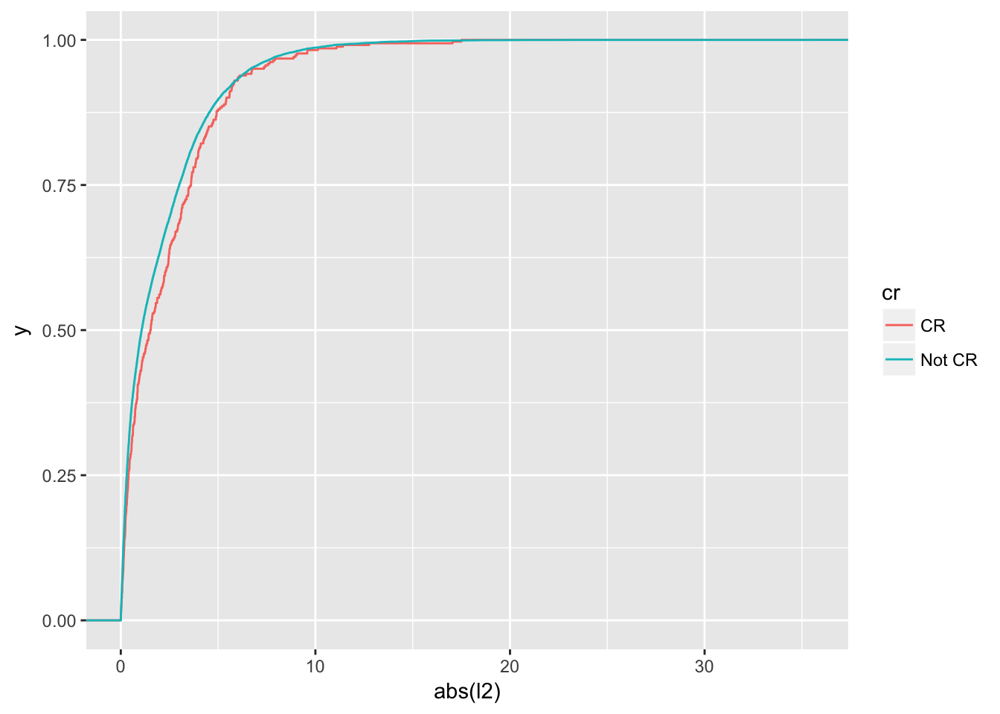
ggplot(df.sum) + stat_ecdf(aes(x = abs(l2), color = tspt))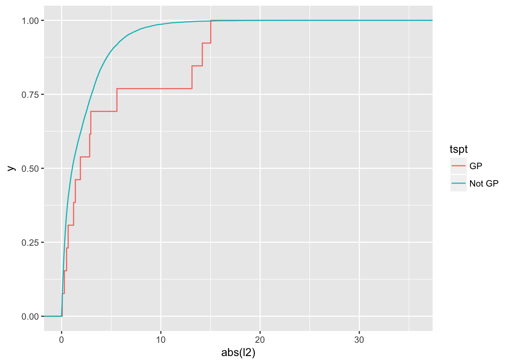
ggplot(df.sum) + stat_ecdf(aes(x = abs(l5), color = paste(cr, tspt, sep = ' & ')))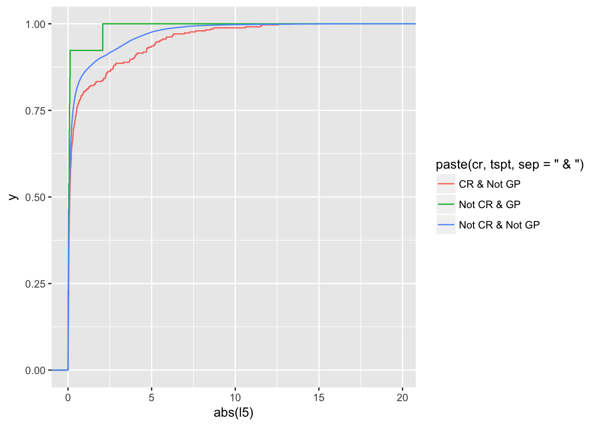
ggplot(df.sum) + stat_ecdf(aes(x = abs(l2), color = paste(cr, tspt, sep = ' & ')))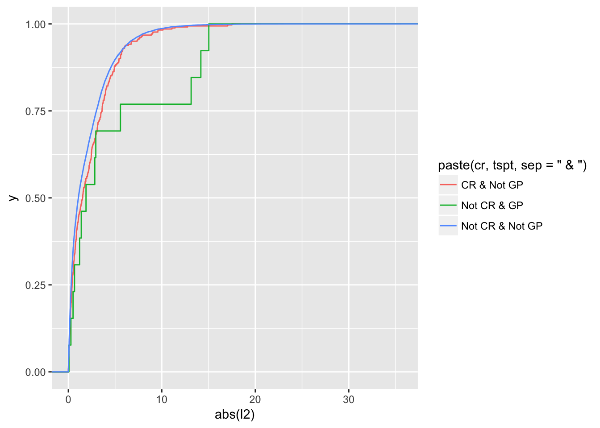
ggplot(df.sum) + geom_point(aes(x = l5, y = l2), alpha = .3) + facet_wrap( ~ paste(cr, tspt, sep = ' & '))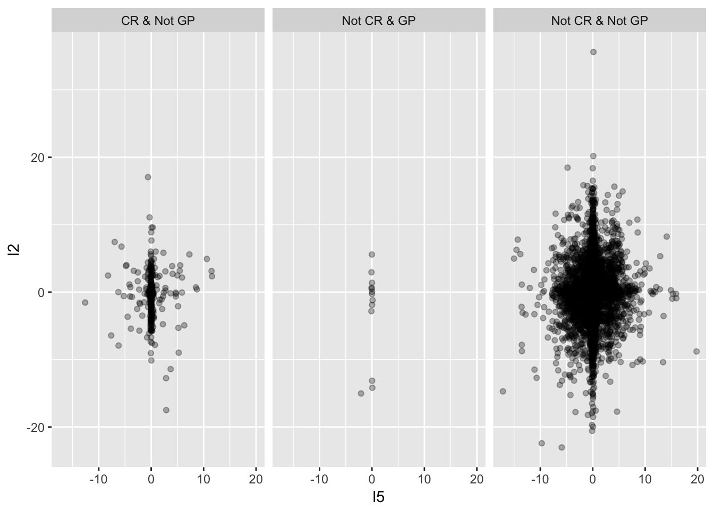
In summary, it seems that factor 5 does NOT capture the phospholipase C-activating G-protein coupled receptor signaling pathway. The top genes in factor 2 has something to do with the phospholipase C-activating G-protein coupled receptor signaling pathway, which is consistent with brain function.